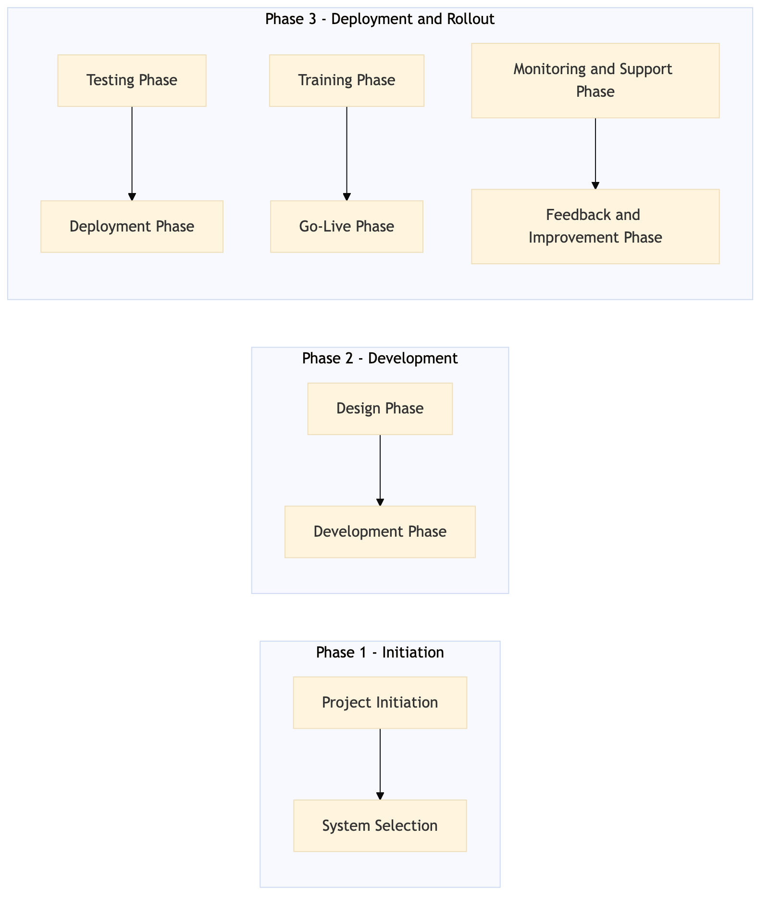

This process document outlines the deployment and rollout of an Online Booking Tool (OBT) for TMC Travel Programme Management, focusing on Business Travel Policy and Programme.
| Trigger | Initiation of a new OBT project by the TMC team based on business needs or technological advancements. |
| Outcome | Successful deployment and rollout of the OBT, with all stakeholders trained and the system integrated into existing workflows, leading to improved travel management efficiency and user satisfaction. |
| Systems | Expedia Open World Partner Central Amadeus NDC Sabre GDS Travelport EVC One Key TravelAds AWS SageMaker Snowflake Kafka Salesforce Tableau SAP Concur T2 SAP Concur Expense Amex GBT Neo/Complete Amadeus GDS SAP S/4HANA International SOS Cvent Amex Corporate Card VCN SAP Analytics Cloud Workday |

Click to enlarge
| Step | Name & Pain Point | Role | System | Input | Output | KPI | Flags |
|---|---|---|---|---|---|---|---|
| 1.1 | Project Initiation Aligning business needs with technical capabilities | Project Manager | SAP S/4HANA | Business requirements document | Project plan and scope definition | Project initiation completed within 2 weeks | ⚠ Exception |
| 1.2 | System Selection Choosing the right technology stack | Technical Lead | AWS SageMaker, Snowflake | Project plan and scope definition | Selected OBT platform and integration strategy | System selection completed within 1 week | ◆ Decision |
| 2.1 | Design Phase Creating user-friendly interfaces | UI/UX Designer | Tableau, Salesforce | Selected OBT platform and integration strategy | Wireframes and UI design documents | Design phase completed within 3 weeks | ⚠ Exception |
| 2.2 | Development Phase Handling complex integrations | Developer | Kafka, AWS SageMaker | Wireframes and UI design documents | Developed OBT application | Development phase completed within 4 weeks | ◆ Decision |
| 3.1 | Testing Phase Identifying and fixing bugs | QA Engineer | SAP Concur T2, SAP Concur Expense | Developed OBT application | Test cases and bug reports | Testing phase completed within 3 weeks | ⚠ Exception |
| 3.2 | Deployment Phase Smooth deployment without downtime | DevOps Engineer | Snowflake, Kafka | Test cases and bug reports | Deployed OBT application to production environment | Deployment phase completed within 2 weeks | ◆ Decision |
| 4.1 | Training Phase Effective training for all users | Trainer | Salesforce, Tableau | Deployed OBT application | Training materials and user guides | Training phase completed within 2 weeks | ⚠ Exception |
| 4.2 | Go-Live Phase Minimizing disruption during go-live | Project Manager | SAP Analytics Cloud, Workday | Training materials and user guides | OBT application live for business use | Go-live phase completed within 1 week | ◆ Decision |
| 5.1 | Monitoring and Support Phase Providing timely support | Support Engineer | Snowflake, Kafka | OBT application live for business use | System monitoring and support tickets | 99% system uptime in the first month | ⚠ Exception |
| 5.2 | Feedback and Improvement Phase Gathering actionable feedback | Project Manager, User | Salesforce, Tableau | System monitoring and support tickets | User feedback and system improvements | 100% user satisfaction within 3 months | ◆ Decision |